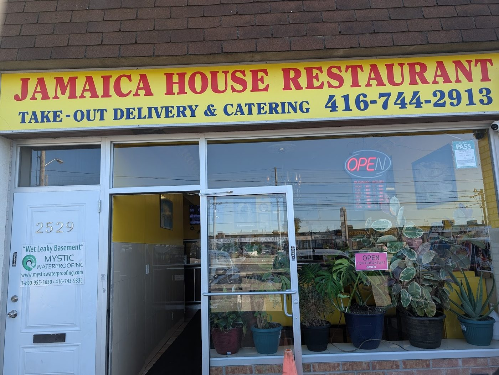

Jamaican restaurant · 2531 Finch Avenue West, North York
Curry goat, oxtail and a sign for take-out, delivery and catering.
Jamaica House is a Jamaican restaurant at 2531 Finch Avenue West in North York. The storefront sign says take-out, delivery and catering. Reviewers come back for curry goat, oxtail and stew beef. Call (416) 744-2913.
- Curry goat
- Oxtail
- Stew beef
- Take-out
- Delivery & catering
What’s on the sign, and on the plates
Curry goat and oxtail
Marcia Berkeley wrote, “Best goat I’ve ever had and customer service is top-notch.” Damian Palmer has been coming “for over 20years” and called it “The best goat and oxtail in Toronto.” Inchan James Hwang, in a Google review copied by CanadaResto, wrote “BEST. FRIED. CHICKEN. EVER,” then said the curry goat “walks the very fine line between perfection and overkill.”
Stew beef, breakfast, and rice and peas
Liana Singh wrote that the stew beef was “tender and richly seasoned,” with “rice and peas underneath” that were “fluffy and full of subtle coconut flavor.” Princess M, in a Google review copied by CanadaResto, called it “Best Jamaican Breakfast.” A pink sign in the storefront window, visible in the listing photo, says “Open for breakfast.”
Take-out, delivery and catering
The yellow sign over the door reads “Take-out Delivery & Catering.” Aleah Meehan, in a Google review copied by CanadaResto, “ordered our catering from Jamaica House” for a last-minute party and wrote, “I highly highly recommend Jamaica house for all your catering needs.” Princess M wrote, “I never see anyone eat there, so I always takeout.” A listing photo does show a small seating area with booths.
Dishes and service notes above come from the storefront sign in a Google listing photo (read 2026-11-18), from Google reviews read on the listing, and from Google reviews copied by the CanadaResto directory. No prices or menu are listed here. A listing photo also shows CASH ONLY signs at the counter; please confirm how you can pay when you order. Call (416) 744-2913 with questions.
2531 Finch Avenue West, North York
A Finch West counter people drive in for
Open early · Breakfast in the window · Late close Thursday to Saturday
Jamaica House is at 2531 Finch Avenue West, the address on Google today. A listing photo of the storefront shows a side door numbered 2529, and some older directories list 2541; the map on this page uses Google’s 2531 address. Reviewers name Omar as chef and owner, and they mention Marlon on the counter. Signs in the room say cash only, so it is worth asking when you order.
“Been coming here for over 20years, since I was a kid and the food never disappoints. The food is always hot and fresh. The best goat and oxtail in Toronto.”
Damian Palmer, Google review, edited 7 months ago (as of Nov 18, 2026). Quoted as written.
What customers say
4.2 ★ from 593 Google reviews (checked Nov 18, 2026). Quotes are word for word. Each one says where it was read: on the Google listing itself, or on a public page that copies reviews. Google shows only a handful of reviews without signing in, so some quotes are Google reviews copied by the CanadaResto directory. A 3-star Google review and mixed CanadaResto copies are included, not only the 5-star ones.
★★★★★
I am now making this my favourite Jamaican restaurant even though it’s 30 minutes away from where I live. There was a mixup with my order and the way staff dealt with. It is another reason why I would recommend them. Food is excellent. Best goat I’ve ever had and customer service is top-notch. shoutout to Marlon whose customer service was EXCELLENT!!!
★★★★★
Been coming here for over 20years, since I was a kid and the food never disappoints. The food is always hot and fresh. The best goat and oxtail in Toronto. I have yet to find a place in the gta and durham that compares or even comes close. I travel a hr from durham just to get their goat and oxtail dinners and im always satisfied. Their white rice is always perfect aswell. I will continue to drive from durham for their food.
★★★★★
This is by far the best Jamaican restaurant in Toronto. The food was so amazing. It reminds me of when I’m back home in Jamaica. I highly recommend everyone to check this place out. If I could leave a 10- star review, I would. This place is amazing. The owners are very friendly, and customer service was amazing. Omar, the chef and owner, and his mom are great people, and they cook the best food in Canada. hands down. Highly recommend 10 out of 10.
★★★★★
This stew beef dish is absolutely incredible! The beef is tender and richly seasoned, cooked down in a flavorful, deeply satisfying gravy that hits all the right notes. The rice and peas underneath are perfectly done, fluffy and full of subtle coconut flavor, soaking up every drop of that delicious sauce. The fresh cabbage slaw on top adds a bright, crunchy contrast that balances the dish beautifully.
What truly elevated the experience was the outstanding customer service—friendly, prompt, and genuinely welcoming. You can tell there’s pride in both the food and the hospitality. A flawless experience from start to finish—I’ll definitely be back!
★★★
This is the ONLY spot I got to for curry goat because the flavour is always amazing! However I have not been please with how they portion the rice and goat meat. The container is always filled with rice that can feed 3 or 4 people and a small amount of curry goat meat. This meal is pretty pricey! Be a little bit more generous with the serving portion of the meat! Other than that the curry goat slap weh!!!!
★★★★★
Customer service and food was excellent!
★★★★★
Amazing curry goat
★★★★★
Best Jamaican Breakfast, I always go here when I get the cravings. The staff are very funny and very nice. I never see anyone eat there, so I always takeout and enjoy the beautiful weather while we can.
Star rating not shown in source
Portions used to be bigger
★★★★★
My family and I hosted a last minute party and ordered our catering from Jamaica House. Not only were they accommodating but the food was absolutely amazing and the portion per platter were big enough for leftovers and everyone to take home! I highly highly recommend Jamaica house for all your catering needs!
★★★★
The curry goat is the best i had from many places yet
Star rating not shown in source
Very disappointed this time... you know when the rice is about to go bad and you can taste the sourness? Thats what it was, with no gravy, steam veg was OK but the oxtail was fire.
Star rating not shown in source
BEST. FRIED. CHICKEN. EVER. And the curry goat... I never paid attention to em I usually got jerk chicken or oxtail, UNTIL I had the curry goat here. Now I cant stop thinking about it. The curry goat walks the very fine line between perfection and overkill.
The sign, the room, and the plates
Real photos from Jamaica House’s public Google listing and its customers’ reviews. A listing photo that showed a priced menu board was left out of this gallery. Tap to enlarge.
Visit Jamaica House
2531 Finch Ave W
North York, ON M9M 2G1
Finch Avenue West, North York
Facebook
| Monday | 6 a.m.–9:30 p.m. |
|---|---|
| Tuesday | 6 a.m.–9:30 p.m. |
| Wednesday | 6 a.m.–9:30 p.m. |
| Thursday | 6 a.m.–10:30 p.m. |
| Friday | 6 a.m.–10:30 p.m. |
| Saturday | 6 a.m.–10:30 p.m. |
| Sunday | 7 a.m.–6 p.m. |
These are the hours on Google today: 6 a.m. to 9:30 p.m. Monday to Wednesday, 6 a.m. to 10:30 p.m. Thursday to Saturday, and 7 a.m. to 6 p.m. on Sunday. CanadaResto lists the same hours. Apple Maps lists 6 a.m. to 11 p.m., which disagrees with Google. Google’s address is 2531 Finch Ave W; a listing photo shows a side door numbered 2529, and some older directories list 2541. A listing photo also shows CASH ONLY signs at the counter — please confirm when you order. Google lists the Facebook page as the website; the live page did not load today, but the link is included because Google names that address.